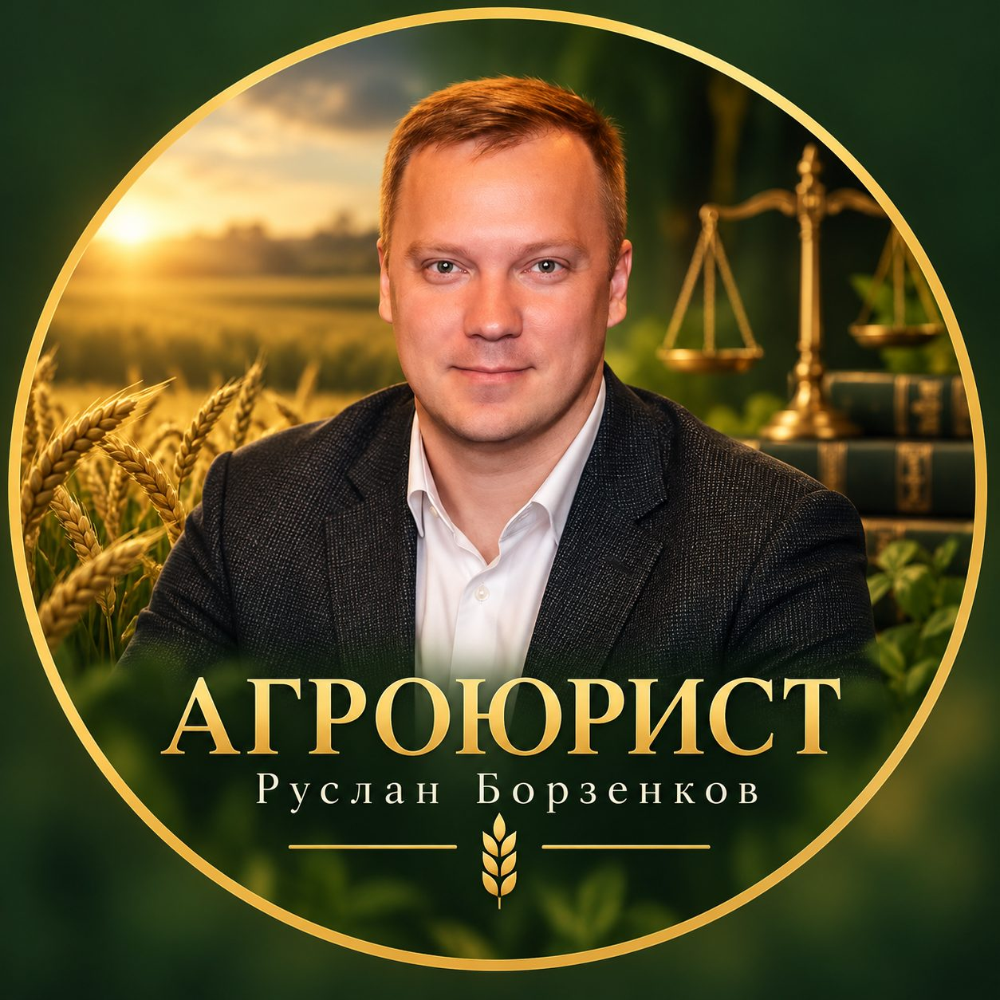

О себе
Меня зовут Руслан Борзенков. Окончил юридический факультет Курского государственного университета. В юридической практике с 2011 года.
Начинал карьеру юристом в Управлении Росреестра по Курской области, затем работал государственным регистратором прав. В совершенстве изучил требования к документам и типовые причины отказов — поэтому готовлю комплекты так, чтобы регистрация проходила с первого раза, а если отказ уже вынесен, точно вижу, на чём он основан, и оспариваю его в суде.
Специализация — земли сельскохозяйственного назначения: выдел долей, споры о границах, договоры поставки зерна, субсидии и поддержка КФХ.
Регулярно пишу для профильных изданий о земельных отношениях и судебной практике — в том числе экспертные комментарии для «Аграрного Вестника». Полный список статей — на странице «Блог», подтверждённые дела — на странице «Дела».
Задать вопрос в WhatsApp